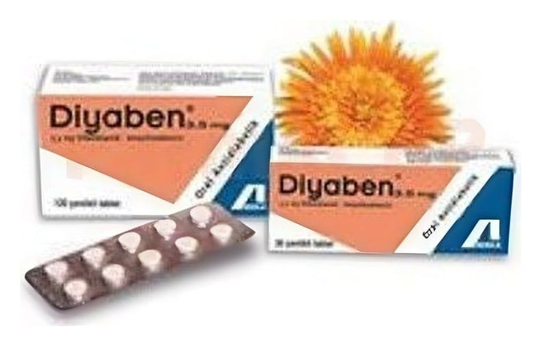

Diyaben 3,5 mg Tablet, 120 Adet

Ne için kullanılır
KT · Bölüm 1• DİYABEN sülfonamidler (üre türevleri) grubuna dahil olan bir ilaçtır. • Her bir kutu 30 veya 120 adet çentikli tablet içerir. • DİYABEN diyet yapmanın tek başına yeterli olmadığı insüline bağlı olmayan şeker hastalığı tiplerinde (Yetişkin Tip diyabet veya Tip II diyabet) kullanılan bir ilaçtır.